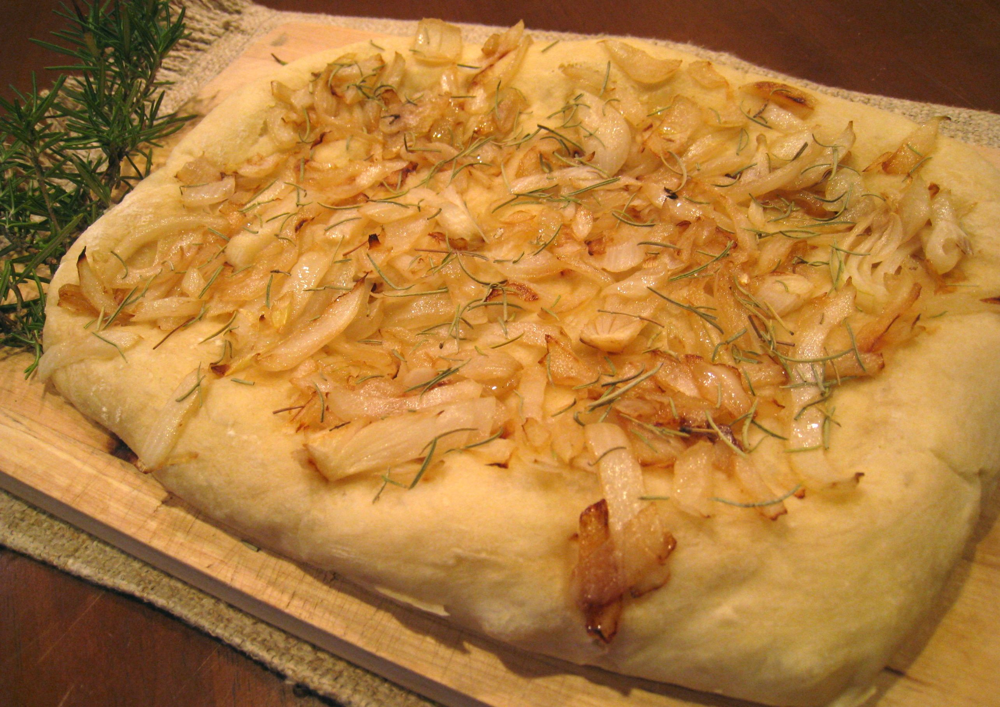

Focaccia is a kind of thick pizza which is usually topped with herbs and other ingredients such as onion, cheese and some kind of vegetables. Focaccia is a very popular snack that many Italians eat “on the go”. Check any bakery and try a piece, you won’t regret it! -1 ready pizza dough -1/2 onion -1/2 tbsp dried rosemary -3 tbsp extra virgin olive oil -Salt Pre-heat the oven to 425° and heat the olive oil in a skillet. Cut the onion into thin slices and cook them in the oil until they become golden. In the meantime roll out the pizza dough on a parchment sheet and put it on a baking tray. When the onion slices are ready, spread them on the dough and place it into the oven. Bake for about 10 minutes (check the base of the pizza by lifting the parchment sheet to see if it is ready), remove from the oven and add the dried rosemary along with some salt (preferably coarse salt).